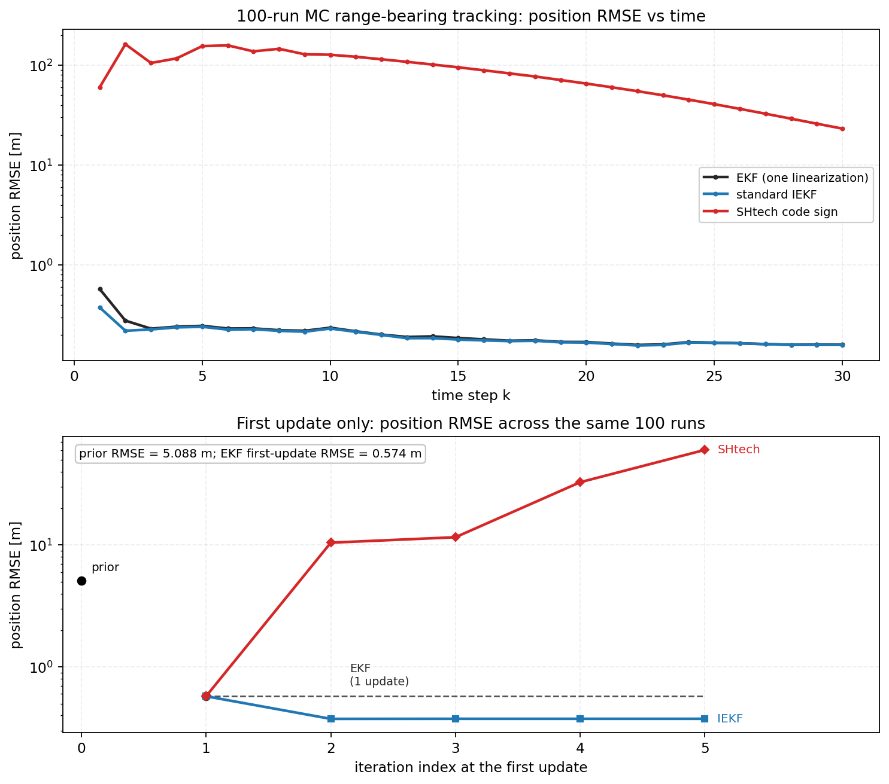
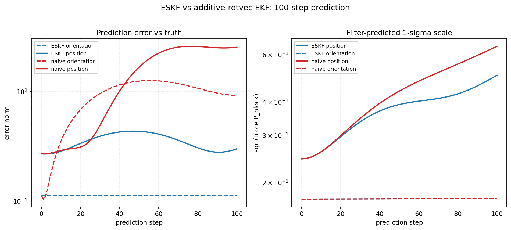
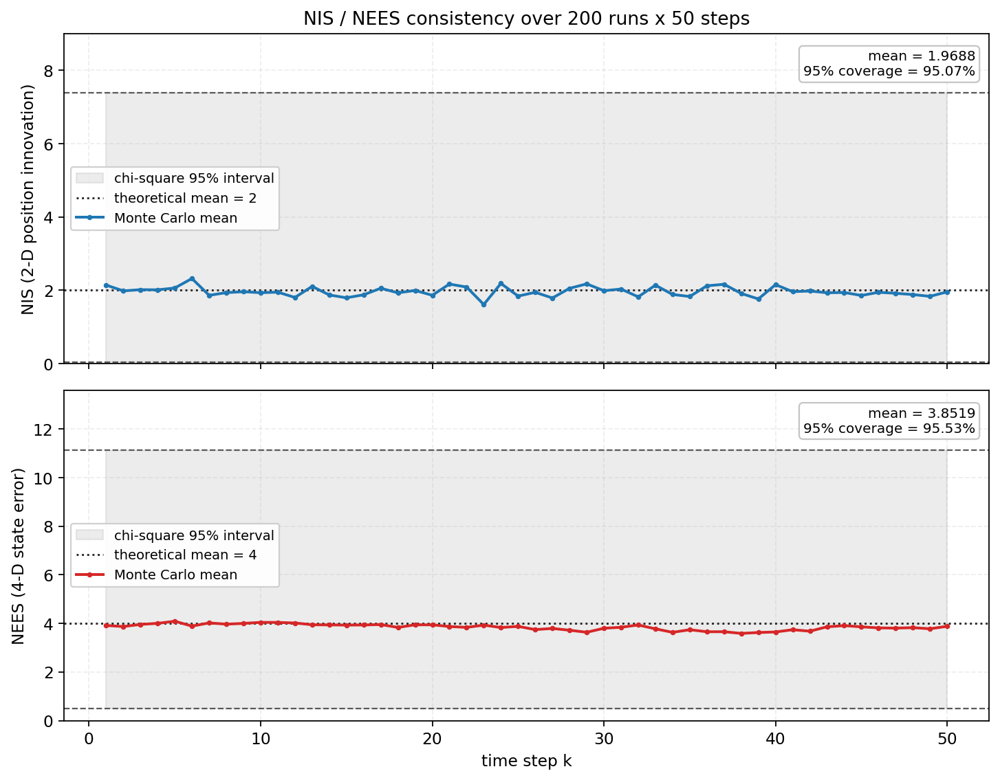

Lesson 0005 · 运动/滤波层
0004 给了带噪声的单板观测。这一节把车状态推到 t_hit：先看预测为什么会错，再看 EKF/ESKF/IEKF 各自修哪一类错。
P⁻ = FPFᵀ + Q；说出 EKF/IEKF/ESKF 各自修什么故障；解释三套代码的“世界系”为什么不同；用 NIS 判断预测和观测是否对得上。
0004 讲清了观测：PnP 给的是单板位姿，不是车心。现在把自瞄真正要预测的车状态写成向量：
x = [ c, v, θ, ω, r1, r2, h ] c⁻ = c + v·Δt θ⁻ = θ + ω·Δt R⁻ = R · Exp([0, 0, ω·Δt]) # wuhan 的 SO(3) 写法
协方差跟着走：
P⁻ = F P Fᵀ + Q
F = ∂f/∂x |_{x}
Q 是“模型没算到的那部分”。车会加速、会转向、会换板，这些都不在匀速模型里；Q 把它们折算成过程噪声。没有 Q，滤波器会越来越自信，最后对真实机动失去响应。
这里的 t 不是随便取的未来时刻，而是 t_hit = t_now + latency + T_fly。预测到 t_hit 只是第一步；怎么把 T_fly 闭合，是 0006 的事。
不要把 EKF/ESKF/IEKF 当成三种“高级程度”。它们分别对应三类具体的预测故障：
| 故障 | 现象 | 代码里的应对 |
|---|---|---|
| 角度绕圈 | θ 从 +π 跳到 −π，或 ω 很大时一步转过半圈 | sp/SHtech 用 limit_rad 把角度拉回；wuhan 直接用 SO(3)，不存 yaw 的标量 |
| 强非线性 | 目标近、ω 大、单板斜视角，EKF 在 x⁻ 处线性化一次不够 | SHtech 用 IEKF/IESEKF 在迭代点反复线性化；wuhan 的 ESKF 也迭代 5 次 |
| 姿态不是单 yaw | 地面坡度、车体俯仰/横滚，单 yaw 模型把 roll/pitch 的误差吸收进 yaw | wuhan 估完整 rot_x/rot_y/rot_z；sp/SHtech 只估 yaw，靠安装/水平假设 |
先有故障，再有滤波器。反过来说：如果目标远、角速度小、观测噪声大，EKF 的一次线性化就够用，迭代只是浪费算力。
x⁻ 处线性化一次H = ∂h/∂x |_{x⁻}
K = P⁻Hᵀ(HP⁻Hᵀ + R)⁻¹
x⁺ = x⁻ + K(z - h(x⁻))
sp 用这种。优点是 H 可以解析、计算便宜；缺点是 h 弯得厉害时，残差会被映射到错误方向，P 也会被低估。
x_{k+1} = x_pri ⊕ K_k [ z - h(x_k) + H_k (x_k ⊖ x_pri) ]
K_k = P_pri H_kᵀ (H_k P_pri H_kᵀ + R)⁻¹
它来自对后验做高斯-牛顿。先验项 H_k(x_k ⊖ x_pri) 的作用，是把“当前迭代点相对先验的偏移”补回残差，保证迭代收敛到 MAP。
+H(x_k ⊖ x_pri)。SHtech 两处实现（IESEKF_Double_Armor.hpp:243、IESEKF.hpp:221）写成 +H(x_pri ⊖ x_k)，差一个负号。标量线性例子 x_pri=0, P=1, H=1, R=1, z=1：标准 IEKF 一步到 0.5 并停住；代码符号在 0.5 和 0 之间来回跳，5 次迭代落点还取决于奇偶。range-bearing 100 次实验末步 RMSE 因此到 23.21 m。
x = x̂ ⊕ δx 位置： c = ĉ + δc 姿态： R = R̂ · Exp(δθ) 预测： x̂⁻ = f(x̂), P⁻ = F P Fᵀ + Q 更新： δ̂ = K(z - h(x̂)), x̂ ← x̂ ⊕ δ̂
旋转矩阵不能直接加 δθ；ESKF 把姿态误差放在切空间，用右乘 R·Exp(δθ) 注入。这样 P 的旋转块不会被“旋转向量绕圈”污染。wuhan 用这种，代价是 H 通常要数值求，计算更重。

H 和 K。图由 verify/verify_kf.py 生成。
verify/verify_kf.py 生成。三套代码的对应关系：
| 项目 | 滤波器 | 线性化点 | H 怎么来 | 代价 |
|---|---|---|---|---|
| sp | EKF | x⁻，一次 | 解析链式法则 | 最便宜；强非线性时偏 |
| wuhan | ESKF | 误差状态，迭代 5 次 | 误差坐标中心差分 | 最贵；姿态一致性好 |
| SHtech | IESEKF | x_k，迭代 5 次 | 解析 H | 中等；实现符号要小心 |
三套代码都叫“世界系”，但不是同一个惯性系：
sp: 世界原点在云台；速度是相对云台 SHtech: 世界原点在 IMU；速度是相对 IMU wuhan: 世界原点在 odom；瞄准前减云台速度
底盘自己也在跑。如果预测用的是“目标相对世界”的速度，而控制用的是“目标相对云台”的角度，二者之间要减掉底盘/云台的运动；否则会有一个系统性的提前量偏差。
Q 管“模型有多不准”，R 管“观测有多不准”。它们共同决定 K 更信谁：
K = P⁻ / (P⁻ + R) # 一维直觉 Q 大 → P⁻ 大 → K 大 → 更信观测 R 大 → K 小 → 更信预测
在自瞄里，Q 的来源是：目标加速、转向、换板、两帧之间的机动；R 的来源是：PnP 像素/深度、灯条端点、斜视角、15° 俯仰。把这两个来源分开，调参才有方向。
NIS 用来检查“残差和 S 是否对得上”：
y = z - h(x⁻) S = H P⁻ Hᵀ + R NIS = yᵀ S⁻¹ y # 期望 ≈ m（观测维数）

verify/verify_kf.py 生成。sp 的代码里有一个阈值用法值得核对：0.711 是 χ²₄ 的 5% 下分位，不是 95% 上分位；用 NIS > 0.711 判失败，健康滤波器约 95% 的帧都会被判失败。具体见 0003 的阈值表。
| 项目 | 预测做什么 | 代码 | 代价/限制 |
|---|---|---|---|
| sp | CV 预测 + 分段 Q，再算延迟和飞行时间 | target.cpp:75、aimer.cpp:32 | 快；强机动/换板时 Q 要够大 |
| wuhan | 1 kHz 预测 c+=vdt、R←R·Exp，批量更新 | motion_model.hpp:181、armor_target.cpp:345 | 姿态一致；投影 H 贵 |
| SHtech | 双模型：低速板模型 / 高速整车模型 | Tracker.cpp:106、:887 | 覆盖速度段；切换阈值和滞回要调 |
SHtech 的双模型是一个很工程化的回答：低速时整车模型对“只平移不旋转”不敏感，容易把平移误估成旋转；高速时板模型又跟不上换板。用 |ω| 在 0.7/2.7 两个阈值之间切换，把“模型选择”显式化。
1. 预测协方差里的 Q，最直接描述的是什么？
2. 状态里存旋转矩阵时，为什么用 ESKF 而不是直接加？
3. NIS 长期明显大于上界，通常说明什么？